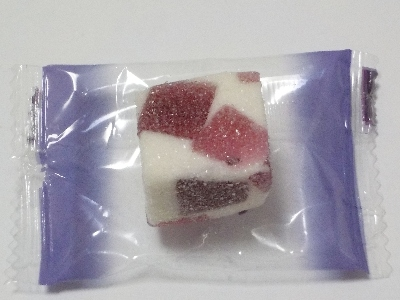
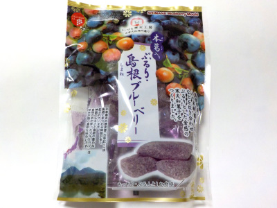
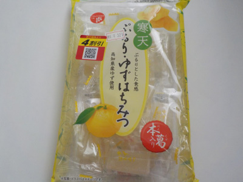
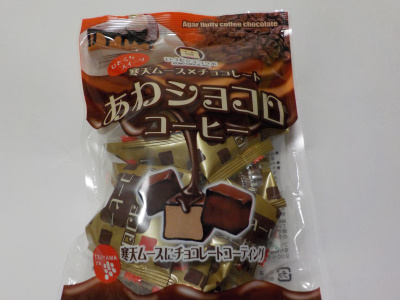

津山屋製菓のぶどうふぁふぁ。
2024/05/26

懐かしい感じの和風ゼリーだと思いました。ブドウ味が濃くて甘いです。
白い部分はあまり味を感じませんでしたが、見た目がキレイでいいですね。
島根県出雲市斐川町直江5246番地
2024/05/26

懐かしい感じの和風ゼリーだと思いました。ブドウ味が濃くて甘いです。
白い部分はあまり味を感じませんでしたが、見た目がキレイでいいですね。
2023/02/27

ふにゃふにゃやわらかい寒天ゼリーです。マイルドな味だったので、沢山食べたくなりました。
甘さ控えめなので、沢山食べてもたぶんヘルシーかな。
2022/05/27

安売りしてたので喜んで買って帰りました。
寒天ゼリーってキャンディーになるんですね。へーそうなんだ。wikiも読んで納得しました。
この寒天ゼリーは「ぷるり」って書くだけあってやわらかでした。
和菓子の柚餅子っぽい。柚餅子がビニールの個包装に入ってて、気軽に食べれるのっていいですね。
柚子と言えば冬ですが、爽やかな柑橘系の味なので暑い日でも美味しく頂けました。
2021/01/11

ちょっと変わった商品を見つけたので買ってみました。
寒天ムースにチョコレートコーティングされた、あわショコロ・コーヒーです。
寒天にチョコってなんか異質な組み合わせですが、寒天がムース状になっているので、ほぼ洋菓子のムースな感じでした。
ムースの美味しいお菓子が気軽に食べれるって凄い！って思いました。
冬になると大手メーカーのチョコクリームが入ったお菓子を食べたりしますが、こっちの方が小さくて気軽に食べれていいかなと思いました。
あと、寒天ってなんとなく体によさそうでいいですよね。
近頃の寒天ゼリーは美味しいものが多い気がする。